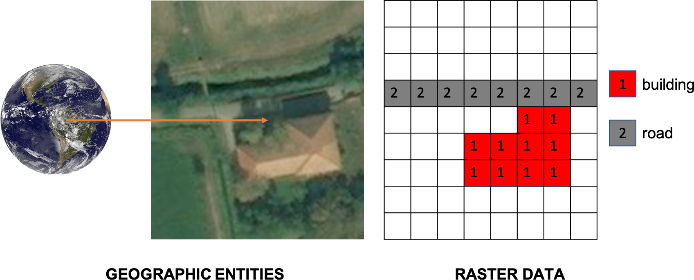
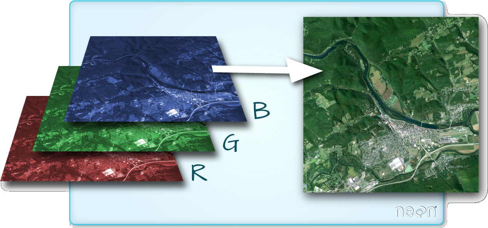

Raster Data¶
1.3.1.1¶
I dati raster descrivono le entità geografiche come una matrice di pixel o celle, le entità vengono rappresentate da valori numerici associati a ciascuna cella. I valori delle celle possono variare a seconda delle informazioni. Ad esempio la copertura del suolo presente in una determinata cella. I valori delle celle possono contenere numeri interi o a virgola mobile. I valori interi rappresentano le categorie, mentre i valori in virgola mobile rappresentano i fenomeni geografici continui in cui i valori cambiano gradualmente. Le celle possono anche contenere valori NoData per rappresentare l’assenza di dati in quelle posizioni. Uno dei formati di dati raster più utilizzati in GIS è il GeoTIFF.
Le celle raster sono quadrate e spaziate uniformemente nelle direzioni x e y. La spaziatura delle celle viene chiamato risoluzione spaziale. La risoluzione spaziale influisce direttamente l’accuratezza nel rappresentare le entità geografiche. La risoluzione spaziale influenza anche la dimensione di un file di dati raster. Maggiore è la risoluzione spaziale migliore è il livello di dettaglio fornito dai dati raster mentre la dimensione del file di dati aumenta.
1.3.1.2¶
Molti file di dati raster sono costituiti da più matrici (bande o canali raster) di pixel che vengono memorizzate in un unico file. Nel caso delle immagini satellitari le bande sono viste come una raccolta di immagini scattate simultaneamente sulla stessa area geografica. Le telecamere multispettrali (sensori satellitari) misurano l’intensità della radiazione riflessa dalla superficie della terra in più regioni dello spettro elettromagnetico e memorizzare le misure in più bande raster. L’immagine a colori è un esempio di queste bande raster. Gli occhi umani sono in grado di rilevare la radiazione di tre diverse regioni dello spettro corrispondenti alle lunghezze d’onda rossa, verde e blu . Il cervello umano combina queste informazioni in un’unica immagine a colori. Tutti i colori visibili agli esseri umani vengono creati mescolando questi canali di colori primari. Le immagini a colori utilizzano lo stesso principio, inclusi gli schermi di visualizzazione digitale. Attraverso l’analisi combinata di bande raster satellitari multispettrali, è possibile misurare molte più caratteristiche fisiche della Terra rispetto al colore, come le proprietà termiche della superficie , le condizioni della vegetazione e la composizione dell’atmosfera. GIS offre un ampio supporto all’analisi di dati raster multispettrali.
